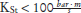
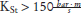

Die Tabellen 1 bis 3 fassen den aktuellen Informationstand über die generellen Einflüsse von Druck, Temperatur und im Vergleich zu Luft verändertem Sauerstoffanteil auf die sicherheitstechnischen Kenngrößen von Gasen, Dämpfen und Stäuben zusammen [1, 2]. Die sicherheitstechnischen Kenngrößen werden in der Regel (nach Norm) bei Umgebungsbedingungen bzw. bei Umgebungsdruck und erhöhten Temperaturen bestimmt. Diese nach Norm bestimmten Kenngrößen können in der Regel angewendet werden, solange atmosphärische Bedingungen vorliegen. Dennoch kann es erforderlich sein im Rahmen der Gefährdungsbeurteilung die Einflüsse von Druck, Temperatur und Sauerstoffanteil auch innerhalb atmosphärischer Bedingung zu berücksichtigen.
| Kenngröße | Druck | |||||
| Stäube | Gase/Dämpfe | |||||
| < Umge- bungs- druck | > Umge- bungs- druck | Einfluss abschätzbar | < Umge- bungs- druck | > Umge- bungs- druck | Einfluss abschätzbar | |
| Brennzahl/ | nicht kritischer | kritischer | nein | n.a. | ||
| Glimm- temperatur*) | konstant | keine Erkenntnisse | nein | n.a. | ||
| Selbst- entzündungs- temperatur | konstant | keine Erkenntnisse | nein | n.a. | ||
| Zünd- temperatur**) | konstant | keine Erkenntnisse | nein | Zunahme | Abnahme | nein |
| Mindest- zündenergie | keine Erkenntnisse | Abnahme | nein | Zunahme | Abnahme | nein |
| Untere Explosions- grenze | Abnahme | Zunahme | ja | Zunahme | Abnahme | nein |
| Unterer Explosions- punkt***) | n.a. | Abnahme | Zunahme | nein | ||
| Oberer Explosions- punkt***) | n.a. | Abnahme | Zunahme | nein | ||
| Obere Explosions- grenze | n.a. | Abnahme | Zunahme | nein | ||
| Sauerstoff- grenz- konzentration | keine Erkenntnisse | Abnahme | nein | Zunahme | Abnahme | ja |
| Maximaler Explosions- druck | Abnahme | Zunahme | ja | Abnahme | Zunahme | ja |
| Maximaler zeitlicher Druckanstieg (KSt-Wert/KG-Wert) | Abnahme | Zunahme | ja | Abnahme | Zunahme | nein |
| Normspaltweite | n.a. | Zunahme | Abnahme | ja | ||
| n.a.: nicht anwendbar | |
| *) | Mindestzündtemperatur des abgelagerten Staubes |
| **) | Bei Stäuben: Mindestzündtemperatur des aufgewirbelten Staubes |
| ***) | zusätzlich erweitert sich aber der Temperaturbereich, innerhalb dessen explosionsfähige Gemische möglich sind, mit steigendem Druck |
Hinweis:
Die unteren Explosionsgrenzen von Gasen und Dämpfen sind meist nur in geringem Maße druckabhängig. Eine Ausnahme bilden z. B. schwer entzündbare teilhalogenierte Kohlenwasserstoffe (Kältemittel).
Bei einigen Gasen, z. B. bei Kohlenstoffmonoxid und Wasserstoff, können die oberen Explosionsgrenzen mit steigendem Druck abnehmen. Damit verhalten sie sich anders als Kohlenwasserstoffe.
| Kenngröße | Temperatur | |||||
| Stäube | Gase/Dämpfe | |||||
| < Umge- bungstempe- ratur | > Umge- bungstempe- ratur | Einfluss abschätzbar | < Umge- bungstempe- ratur | > Umge- bungstempe- ratur | Einfluss abschätzbar | |
| Brennzahl/ Brennverhaten | keine Erkenntnisse | kritischer | nein | n.a. | ||
| Glimm- temperatur*) | keine Erkenntnisse | Abnahme | nein | n.a. | ||
| Selbst- entzündungs- temperatur | n.a. | n.a. | ||||
| Zünd- temperatur**) | keine Erkenntnisse | keine Erkenntnisse | keine Erkenntnisse | n.a. | ||
| Mindest- zündenergie | keine Erkenntnisse | Abnahme | ja | Zunahme | Abnahme | nein |
| Untere Explosions- grenze | keine Erkenntnisse | Abnahme | ja | Zunahme | Abnahme | ja |
| Obere Explosions- grenze | n.a. | Abnahme | Zunahme | nein | ||
| Unterer Explosions- punkt | n.a. | entfällt | entfällt | entfällt | ||
| Oberer Explosions- punkt | n.a. | entfällt | entfällt | entfällt | ||
| Sauerstoff- grenz- konzentration | keine Erkenntnisse | Abnahme | ja | Zunahme | Abnahme | ja |
| Maximaler Explosions- druck | keine Erkenntnisse | Abnahme | ja | Zunahme | Abnahme | ja |
| Maximaler zeitlicher Druckanstieg (KSt-Wert/KG-Wert) | keine Erkenntnisse | Zunahme für  Abnahme für  | nein | keine Erkenntnisse | keine Erkenntnisse | nein |
| Normspaltweite | n.a. | Zunahme | Abnahme | ja | ||
| n.a.: nicht anwendbar | |
| *) | Mindestzündtemperatur des abgelagerten Staubes |
| **) | Bei Stäuben: Mindestzündtemperatur des aufgewirbelten Staubes |
| Kenngröße | Sauerstoffvolumenanteil im Inertgas + O2-Gemisch | |||||
| Stäube | Gase/Dämpfe | |||||
| < 21 Vol.% | > 21 Vol.% | Einfluss abschätzbar | < 21 Vol.% | > 21 Vol.% | Einfluss abschätzbar | |
| Brennzahl/ Brennverhalten | konstant | kritischer | nein | n.a. | ||
| Glimm- temperatur*) | Zunahme | Abnahme | nein | n.a. | ||
| Selbst- entzündungs- temperatur | Zunahme | Abnahme | nein | n.a. | ||
| Zünd- temperatur**) | Zunahme | Abnahme | nein | Zunahme | Abnahme | nein |
| Mindest- zündenergie | Zunahme | Abnahme | ja | Zunahme | Abnahme | |
| Untere Explosionsgrenze | konstant | konstant | nein | Konstant bis in Nähe des Mindest- zünddruckes | konstant | ja |
| Obere Explosionsgrenze | n.a. | Abnahme | Zunahme | nein | ||
| Unterer Explosionspunkt | n.a. | konstant bis in Nähe des Mindest- zünddruckes | keine Erkenntnisse | ja | ||
| Oberer Explosionspunkt | n.a. | Abnahme | Zunahme | nein | ||
| Sauerstoffgrenz- konzentration | n.a. | n.a. | ||||
| Maximaler Explosionsdruck | Abnahme | Zunahme | ja | Abnahme | Zunahme | nein |
| Maximaler zeitlicher Druckanstieg (KSt-Wert/KG-Wert) | Abnahme | Zunahme | nein | Abnahme | Zunahme | nein |
| Normspaltweite | n.a. | Zunahme | Abnahme | ja | ||
| n.a.: nicht anwendbar | |
| *) | Mindestzündtemperatur des abgelagerten Staubes |
| **) | Bei Stäuben: Mindestzündtemperatur des aufgewirbelten Staubes |